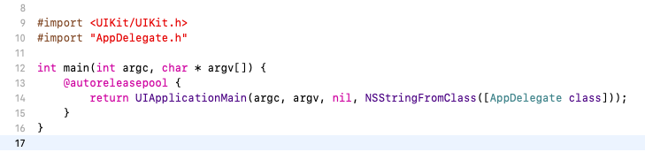
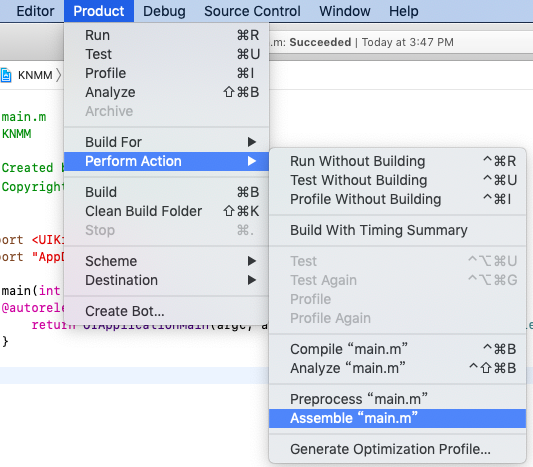
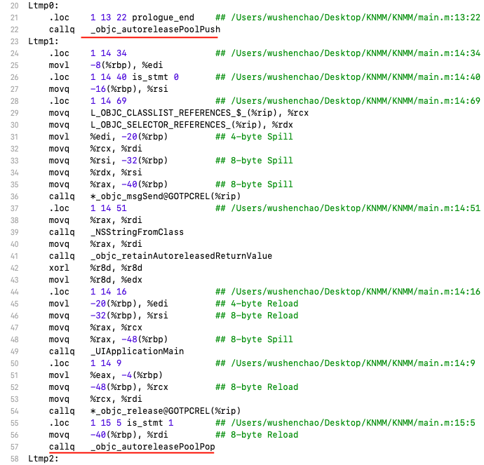
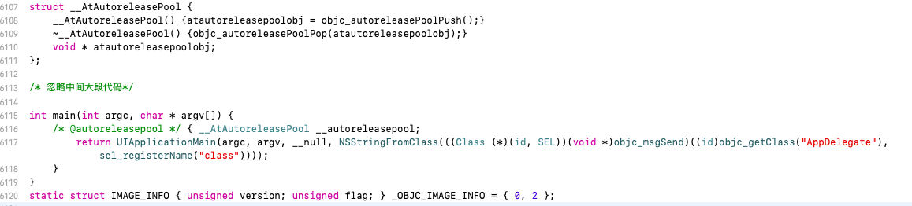
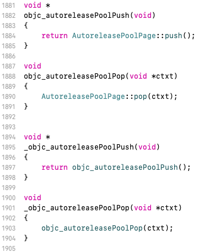
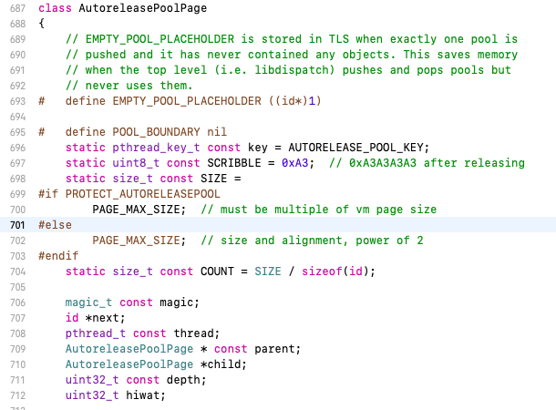
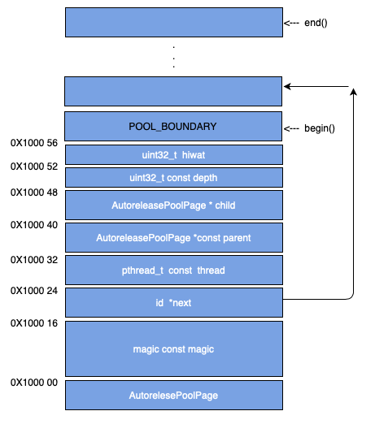

AutoreleasePool实现原理
首先我们在 main.m 的文件中定义如下代码段:

我们可以通过如下两种方式转换这段代码
1. 利用xcode自带工具，转变成汇编语言如下所示


2. 通过 xcrun -sdk iphoneos clang -arch arm64 -rewrite-objc main.m 命令转换成c++
在main.m的同目录下会生成main.cpp文件，以下是截取文件中关键部分

通过对以上代码的转换后我们发现 AutoreleasePool在对象初始化时调用 _objc_autoreleasePoolPush / objc_autoreleasePoolPush 方法，在对象生命周期结束时调用 _objc_autoreleasePoolPop / objc_autoreleasePoolPop 方法。
通过runtime源码我们发现这些方法内部实现如下:

这两个方法最终调用了AutoreleasePoolPage对象的push()和pop()方法。所以调用了autorelease的对象最终都是转换通过AutoreleasePoolPage对象来管理的。
AutoreleasePoolPage 源码
AutoreleasePoolPage 内部结构如下所示(只截取了部分)

每个字段的含义如下:
1 | POOL_BOUNDARY：原变量名 POOL_SENTINEL, 哨兵对象,用来区别每个page的边界 |
自动释放池中的栈
我们知道AutoreleasePoolPage是一个双向链表,它在内存中的结构如下所示:

我们发现以 POOL_BOUNDARY（POOL_SENTINEL）哨兵为界限，哨兵下面56bits的内存用于存储 AutoreleasePoolPage的成员变量,哨兵之后的内存都是用来存储加入到自动释放池中的对象。
主要方法说明
begin && end
1 | id * begin() { |
begin和end方法分别指向栈底和对象的结尾（见图中的begin和end）
add
1 | id *add(id obj) |
标准的进栈操作，向AutoreleasePoolPage添加对象
releaseUntil
1 | void releaseUntil(id *stop) |
出栈操作，和普通的出栈不太一样，这里的出栈会一直递归出栈直到查找到 stop 才会停止。这里的SCRIBBLE 是用来填写空白区域内存的。
pageForPointer
1 | static AutoreleasePoolPage *pageForPointer(uintptr_t p) |
通过指针获取相对应的page
autoreleaseFast
1 | static inline id *autoreleaseFast(id obj) |
快速获取page对象的指针
push()
1 | static inline void *push() |
入栈操作，将一个POOL_BOUNDARY入栈，并且返回其存放的内存地址。分debug和release两种情况，debug下每次都会创建一个新的page，比release会多耗费内存。autoreleaseFast具体参见上一方法说明
pop(ctxt)
1 | static inline void pop(void *token) |
出栈操作，注意debug模式和非debug模式的不同。
小结
线程与runloop是一一对应的关系，因此不能是完成一次循环还是线程被关闭，autoreleasepool都会被释放。而 autorelease 是由若干 AutoreleasePoolPage 以双向链表的方式组成的, 每个page的大小是4096字节， 当程序运行到 @autoreleasepool{ 时, objc_autoreleasePoolPush()被调用, runtime会向当前的AutoreleasePoolPage中添加一个 POOL_BOUNDARY 对象作为哨兵, 在 {} 中创建的对象会被依次记录到AutoreleasePoolPage的栈顶指针, 当运行完 @autoreleasepool{} 时, objc_autoreleasePoolPop(哨兵)将被调用, runtime就会向AutoreleasePoolPage中记录的对象发送release消息直到哨兵的位置, 即完成了一次完整的运作.
以上内容参考以下文章